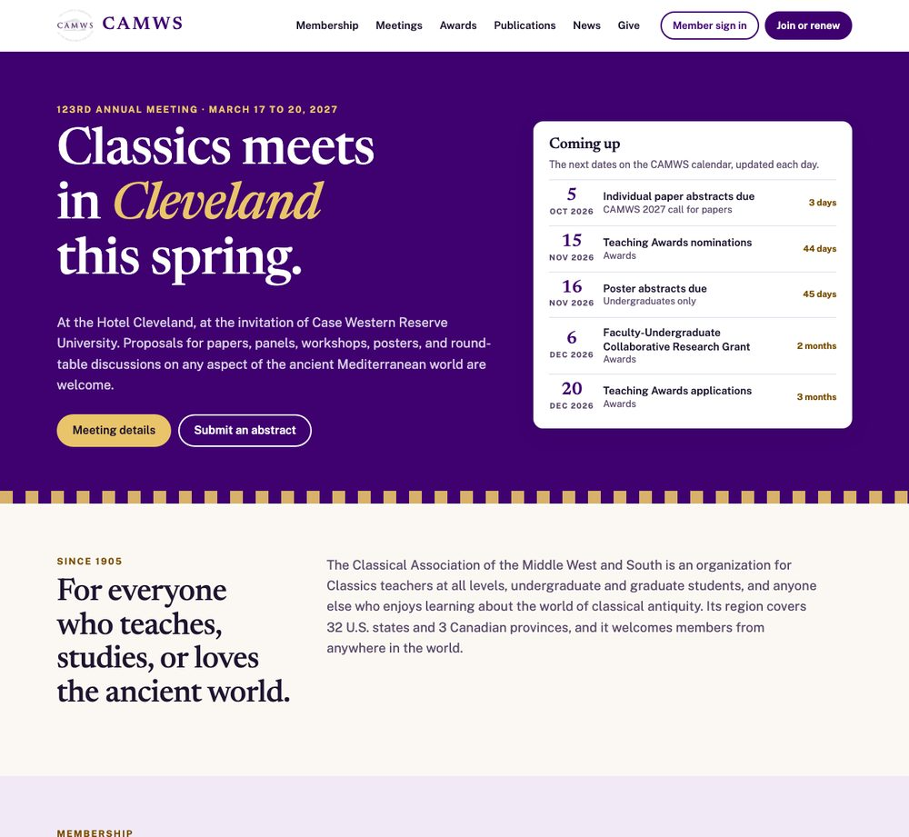
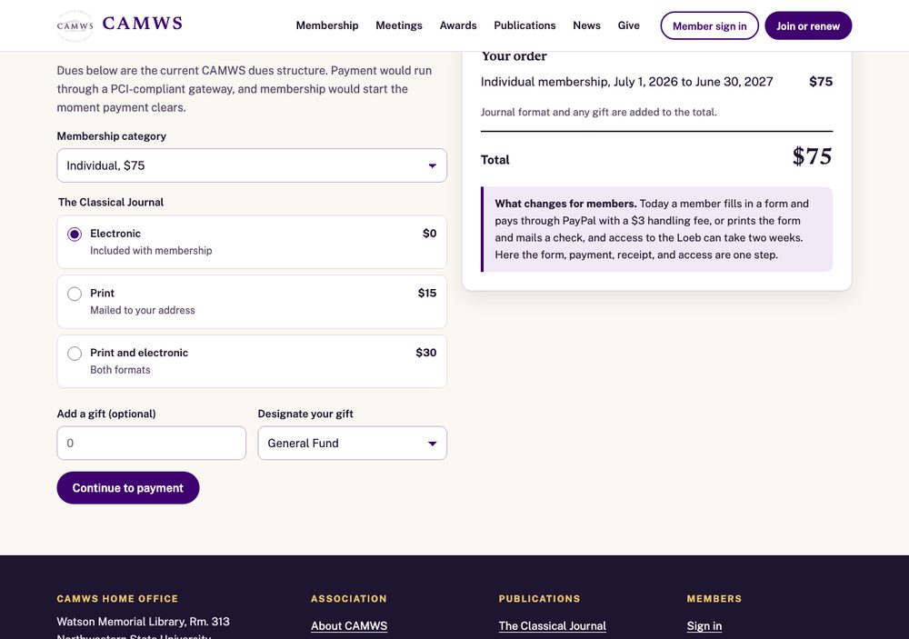

Submitted to Professor Victoria Pagán, Classical Association of the Middle West and South, at nominating@camws.org.
| Section | Section | RFP reference |
|---|---|---|
| 1 | Executive summary | VII. Proposal Requirements |
| 2 | Technical approach: platform and components | IV.D, V.B, V.C |
| 3 | Technical approach: accessibility, security, search, performance, sustainability | IV.H, V.A, V.D to V.H |
| 4 | Scope of work and deliverables | IV.A to IV.H |
| 5 | Project plan, timeline, and content migration plan | IV.E, VII |
| 6 | Training, launch, and ongoing support model | IV.F, IV.G, VII |
| 7 | Organization, team, and qualifications | VI, VII |
| 8 | Portfolio and client references | VI, VII |
| 9 | Cost proposal | VII |
| 10 | Questions for CAMWS and requirements checklist | VIII |
A working concept for CAMWS: a homepage, a member portal, and meeting registration with abstract submission. It uses CAMWS's own published content, dues, and dates. It is unlisted and hidden from search engines.

Member names and staff figures in the concept are invented samples and are labeled as such. Dues, dates, awards, and descriptions are CAMWS's own.

The RFP says a modernized website is "a prerequisite for the broader work of organizational renewal." We agree, and we have read the current site with that in mind. The problem is less how it looks than what a graduate student or a first-year teacher has to do to join, renew, register, or find a deadline.
Williams Digital is a small studio in Birmingham, Alabama, inside the CAMWS region. Dylan Williams designs and builds every site and stays on as the support contact after launch. Our closest comparable work is a community association website whose staff post their own events, newsletters, and documents; a membership-style directory with online applications, payments, and an approval dashboard; and a media platform that nontechnical staff publish to every day.
We would rather show than describe, so we built the concept before writing this proposal.
We have not yet built a site for a scholarly association, and the sites we have delivered run on content systems we built ourselves. We recommend WordPress and WildApricot for CAMWS anyway, because the RFP asks for a platform that does not depend on one vendor's specialized knowledge, and that includes ours. Section 7 says more about this and about how a one-person studio protects CAMWS from depending on one person.
Two well-supported systems, each doing the job it is best at, joined by a single member sign-in.
| Component | Solution |
|---|---|
| Content management | WordPress with a custom theme. Structured content types for events, announcements, publications, awards, committees, and officers. Each has labeled fields and its own page template. |
| Member portal | WildApricot member accounts, signed in from the CAMWS website: profile, membership status, renewal, receipts, and benefit pages. |
| Applications, renewals, reminders | WildApricot membership levels matching the CAMWS dues structure, including joint, retired, and life memberships. Automatic renewal reminders by email before and after the June 30 year end. |
| Payments | WildApricot's integrated, PCI-compliant payment processing. Card details never touch the CAMWS website. Members receive receipts by email. Checks are recorded by staff in the same system. |
| Member directory | WildApricot directory shown to signed-in members only. Each member chooses what is visible. |
| Staff reports | Membership status, renewals, lapsed members, and payment activity, with export to spreadsheet. |
| Meeting registration | WildApricot event registration with member and non-member registration types, options such as the banquet, and payment. Membership is checked automatically. |
| Abstract submission | Submission forms in WordPress for papers, panels, workshops, round-tables, and posters, open to current members. Reviewers see abstracts without author names. The chair exports scores and sends decisions. |
| News and events calendar | One calendar of meeting dates, submission deadlines, and award deadlines that appears on the homepage and on each related page. Items retire themselves after their date. |
| Document library | A searchable library for bylaws, committee charters, reports, and grant applications. Replacing a file keeps its address, so links elsewhere never break. |
| Officer and committee email | The existing role addresses (president@, cjeditor@, and the committee addresses) documented and moved to one managed service in CAMWS's name. We would recommend Google Workspace for Nonprofits, which is offered at no cost to eligible organizations. |
| Analytics | Traffic and page-level reports, with a one-page monthly summary staff can read without training. |
| Social media | Share previews on every page and links to CAMWS accounts. We advise against embedded feeds, which slow pages and break when platforms change their rules. News is posted on the site first and shared outward. |
Product names are recommendations to be confirmed with CAMWS during planning. If the committee prefers a different membership platform, the website design and content work in this proposal do not change.
The site would be built to WCAG 2.2 Level AA from the first design, not corrected at the end.
CAMWS owns every account, the domain, the theme and its source files, all content, and all member data. Hosting, WildApricot, email, and analytics are opened in CAMWS's name with CAMWS's billing. Website content exports in WordPress's standard format. Member, payment, and registration records export from WildApricot as spreadsheets at any time, and we would set up a scheduled export to CAMWS's own storage so a current copy always exists outside the platform.
The target is public pages that load in under two seconds on a typical phone connection, inside the RFP's three-second limit. The theme is hand-coded with no page builder. Pages are cached and served through a content delivery network. Images are compressed and sized automatically on upload. We test before launch and report the results.
Each part of Section IV of the RFP, with what CAMWS receives.
| RFP section | What we do | What CAMWS receives |
|---|---|---|
| A. Initial planning | Interviews with the Secretary-Treasurer, the home office, officers, editors, and committee chairs. A short member survey building on the 2025 survey, with extra attention to graduate students, early-career scholars, and K-12 teachers. | Findings memo. Project plan with milestones for CAMWS approval. |
| B. Site mapping and audit | A full inventory of the current site and its analytics. Every page marked keep, rewrite, combine, or retire, reviewed with staff. | Content inventory spreadsheet. Proposed site map and navigation for approval before development. |
| C. Visual design | A design system built from the CAMWS logo and its purple. Homepage and interior templates, designed for phones first. | Approved designs. Style guide for future content, including how to classify and name it. |
| D. Development | WordPress theme and content types. WildApricot setup, member import, and single sign-in. Meeting registration, abstract submission and review, calendar, document library, analytics, and email addresses. | A private staging site CAMWS can use and test throughout the build. |
| E. Content migration | Transfer of all kept content, with redirects from every old address. See the migration plan in section 5. | Migrated site. Redirect map. Quality assurance report. |
| F. Training and documentation | Live training for the Secretary-Treasurer and relevant personnel, recorded. | Written user guide with screenshots. Short video tutorials for routine tasks. |
| G. Launch and post-launch | Pre-launch testing on phones, tablets, and desktops, in current browsers, with assistive technology. Launch at a quiet time agreed with staff. | Test report. 60 days of post-launch monitoring and fixes at no charge. Written handover. |
| H. Security and performance | Security updates, automated backups, firewall and malware protection, image compression, and caching. | Configured hosting in CAMWS's name. Ongoing care under the support plan in section 6. |
The schedule is built around the CAMWS year. Nothing changes for members before the Cleveland meeting, and the new site is live before renewals begin for July 1.
| When | Phase | What happens | Milestone for CAMWS approval |
|---|---|---|---|
| Nov 30 to Dec 18, 2026 | Planning | Kickoff, interviews, member survey, platform decision confirmed, accounts opened in CAMWS's name. | 1. Project plan and findings memo |
| Jan 4 to Jan 29, 2027 | Audit and site map | Content inventory, keep or retire decisions with staff, navigation. | 2. Site map and content inventory |
| Feb 1 to Mar 5 | Visual design | Design system, homepage and interior templates, style guide. | 3. Approved designs |
| Mar 8 to Apr 30 | Development | Theme, content types, WildApricot setup, member import, sign-in, registration, abstracts, calendar, library. | 4. Working staging site |
| Mar 17 to 20 | Annual Meeting | The staging site is shared with members in Cleveland for feedback. Registration for this meeting stays on the current system. | Member feedback summary |
| Apr 19 to May 21 | Migration and testing | Content transfer, redirects, accessibility and performance testing, security review. | 5. Test and accessibility reports |
| May 24 to Jun 4 | Training | Live sessions, user guide, video tutorials. | 6. Staff sign-off to launch |
| Week of Jun 7 | Launch | Go live, monitor, confirm redirects and payments. | Live site |
| Jun to early Aug | Post-launch | 60 days of monitoring and fixes. Membership renewals for 2027 to 2028 and the next call for papers run on the new system. | 7. Handover document |
The dates assume a vendor is selected by late November 2026. A later start moves the early phases, and the June launch can still hold if selection happens by mid-January. Each milestone needs one decision from CAMWS, and we would ask for five working days for review.
The Classical Journal, Teaching Classical Languages, and Southern Section websites are separate sites today. They are not included in the migration unless CAMWS asks. See the questions in section 10.
Before launch we test every template on phones, tablets, and desktops, run the full accessibility and performance tests, restore a backup, and run a real test payment and refund. For 60 days after launch we monitor the site daily, fix anything that surfaces at no charge, and review search and traffic reports with staff. At day 60 CAMWS receives the handover document and chooses whether to continue with a support plan.
| Support plan | |
|---|---|
| Scope | WordPress and plugin updates tested on a staging copy. Daily backups checked monthly. Uptime and security monitoring. An annual accessibility recheck. Up to three hours each month of edits, small improvements, and staff questions. Help opening each year's meeting registration and call for papers. |
| Staffing | Dylan Williams, the person who built the site. There is no help desk between CAMWS and the developer. |
| Response times | Site down or payments failing: response within four hours, every day. Other problems: within one business day. Requests and questions: within two business days. |
| Pricing | $350 per month, billed quarterly, cancel at any time. Work beyond the plan is $95 per hour, quoted and approved in writing first. |
| Without a plan | CAMWS may instead call on us as needed at the hourly rate, or use any WordPress developer. The handover document makes either possible. |
Williams Digital is a web design and development studio in Birmingham, Alabama, owned and operated by Dylan Williams.
| Role | Who |
|---|---|
| Primary point of contact and project manager | Dylan Williams. One contact for all CAMWS communications, from kickoff through ongoing support. |
| Designer and developer | Dylan Williams. The person who designs the pages also builds them, migrates the content, and trains staff. |
| Accessibility and quality assurance | Dylan Williams. An independent accessibility audit by a third party can be added if the committee would like outside confirmation. It is priced as an option in section 9. |
The RFP asks for key personnel who are available throughout, and for a solution that does not rely on specialized expertise. A one-person team is a real consideration, and we would rather name it than hide it. It shaped this proposal in four ways.
The RFP asks for proven experience with the proposed content management system. The client sites in our portfolio run on staff content systems that we designed and built ourselves, because that suited each client. A WordPress theme is made of the same HTML, CSS, and JavaScript we write every day, and our hand-coded designs move into one without a page builder. A WildApricot integration at CAMWS's scale would be new for us. We would set up a working WildApricot trial and sign-in on the staging site in the first weeks of the project, so the committee can judge it early.
Dylan works full time in ministry, so he knows small-staff organizations from the inside: board approvals, volunteers, and websites kept up by people with other jobs to do. CAMWS met in Mobile in 2026 at the invitation of the Alabama Classical Association, and Samford University, here in Birmingham, is an institutional member. We would be glad to build this for an association with roots in our own state.
| Vestlake Communities at Liberty Park | Buy Auburn | Legacy Sports Media | |
|---|---|---|---|
| Organization | Residential community association, Vestavia Hills, Alabama | Business network and directory, Auburn, Alabama | Media organization covering Alabama high school athletics |
| Why it is comparable | An association whose staff run the site. Events, newsletters, governing documents, minutes, financials, and forms. | Applications, payments, and a directory. Businesses apply online and pay, and the client approves each listing. | Nontechnical staff publish daily. Stories, scores, schools, and galleries. |
| Scope | Public website, calendar with featured events, newsletter archive, document library by category, staff sign-in with roles. Two management staff post their own content. | Searchable directory with filters, online application, payment, email notifications, and an approval dashboard. | Public site and a staff newsroom for writing and publishing, with a data import. |
| Website | vestlakelibertypark.com | buyauburn.com | legacysportshq.com |
| Platform | Custom staff admin on a hosted database | Custom admin dashboard on a hosted database | Custom content system |
| Launched | August 2026 | April 2026 | July 2026 |
| Ongoing | Hosting, domain, support | Hosting and monthly support | Hosting and support |
Every fact in the concept comes from camws.org. Sample member names and staff figures are invented and labeled.
Three clients for engagements closest in scope to this one.
| Client and engagement | Contact | Phone | |
|---|---|---|---|
| Vestlake Communities at Liberty Park Association website with staff content system | Name and title (confirm permission first) | phone | |
| Buy Auburn Directory with applications and payments | Name and title (confirm permission first) | phone | |
| Legacy Sports Media Media site with staff newsroom | Name and title (confirm permission first) | phone |
These engagements are smaller than CAMWS's project. Each covers part of its scope: an association's staff-run content, online applications with payments, and daily publishing by nontechnical staff.
A fixed price for the full scope in the RFP, itemized by phase. It does not change unless the scope does.
| Phase | Includes | Cost |
|---|---|---|
| A. Initial planning | Stakeholder interviews, member survey, findings memo, project plan | $3,200 |
| B. Site mapping and audit | Content inventory of about 1,490 pages, analytics review, site map, navigation | $2,600 |
| C. Visual design | Design system, homepage and interior templates, style guide | $5,400 |
| D. Development: website | WordPress theme, structured content types, calendar, document library, news, search, analytics, email address setup | $7,800 |
| D. Development: membership | WildApricot setup, dues levels, member import, sign-in, directory, renewals and reminders, payments, staff reports | $4,600 |
| D. Development: meetings | Meeting registration, abstract submission, anonymous review, decision export | $3,900 |
| E. Content migration | Transfer of kept content, redirect map, quality assurance | $3,400 |
| F. Training and documentation | Three recorded sessions, user guide, video tutorials, handover document | $1,400 |
| G and H. Testing, launch, post-launch | Accessibility, performance, and security testing with written reports, launch, 60 days of monitoring and fixes | $2,200 |
| Total one-time cost | $34,500 | |
Payment schedule: 25% at signing, 25% at design approval (milestone 3), 25% at the working staging site (milestone 4), 25% at launch.
Paid by CAMWS directly to each provider, on accounts CAMWS owns. Figures are estimates from published prices in October 2026 and would be confirmed during planning.
| Item | Detail | Estimated per year |
|---|---|---|
| WildApricot | Plan for up to 2,000 contacts. Lower with one- or two-year prepayment. | $2,900 to $3,200 |
| Website hosting | Managed WordPress hosting with backups, firewall, and content delivery network | $360 to $600 |
| Forms license | One licensed plugin for abstract submission and review | Up to $300 |
| WordPress and theme | Open source. The custom theme has no license fee. | $0 |
| Email for role addresses | Google Workspace for Nonprofits, if CAMWS is eligible | $0 |
| Card processing | The processor's standard percentage on each online payment, as with PayPal today | Per transaction |
| Item | Detail | Cost |
|---|---|---|
| First 60 days after launch | Monitoring and fixes | Included |
| Support plan (optional) | Scope and response times in section 6 | $350 per month |
| Hourly rate | Work beyond the scope or the plan, approved in writing first | $95 per hour |
| Option | Detail | Cost |
|---|---|---|
| Independent accessibility audit | A third-party WCAG 2.2 AA audit before launch, billed at the auditor's cost | Quoted at cost |
| Journal and Southern Section sites | Bringing the CJ, TCL, or Southern Section websites into the new system | Quoted after the audit |
Five-year view. Year one: $34,500 plus recurring costs. Years two to five: about $3,300 to $4,100 a year in platform and hosting costs, plus $4,200 a year if CAMWS keeps the support plan.
We have priced the scope as written. The answers to these would sharpen the plan, and none would raise the fixed price for the scope in the RFP.
| RFP requirement | Met | Where |
|---|---|---|
| Member needs analysis and stakeholder interviews (IV.A) | Yes | Section 4 |
| Site audit and proposed site map before development (IV.B) | Yes | Sections 4 and 5 |
| Design system, responsive layouts, style guide (IV.C) | Yes | Section 4, and the concept |
| Member portal: login, profile, renewal, directory (IV.D) | Yes | Section 2, and the concept |
| Conference registration, abstract submission, payment (IV.D) | Yes | Section 2, and the concept |
| News, events calendar, document library, analytics, email, social (IV.D) | Yes | Section 2 |
| Content migration with redirects and quality assurance (IV.E) | Yes | Section 5 |
| Training, written guides, video tutorials (IV.F) | Yes | Section 6 |
| Pre-launch testing and a defined post-launch period (IV.G) | Yes | Section 6 |
| Security updates, backups, firewall, performance (IV.H) | Yes | Section 3 |
| WCAG 2.2 AA, testing methodology, editor-maintained (V.A) | Yes | Section 3 |
| Staff editing, scheduling, roles, content types, version history (V.B) | Yes | Section 2 |
| Applications, renewals, reminders, PCI-compliant payments, reports (V.C) | Yes | Section 2 |
| Integration with a membership management platform (V.C) | Yes | Section 2 |
| Data ownership and export in standard formats (V.D) | Yes | Section 3 |
| Patching procedures, multi-factor authentication, auditable roles, recovery (V.E) | Yes | Section 3 |
| Site search, metadata, semantic markup, AI-assisted search (V.F) | Yes | Section 3 |
| Pages under three seconds, caching and CDN (V.G) | Yes | Section 3 |
| Maintenance burden, licensing costs, five-year path (V.H) | Yes | Sections 3 and 9 |
| Nonprofit or membership experience, ideally scholarly (VI) | In part | Sections 7 and 8. Association and nonprofit work, no scholarly association yet. |
| Proven experience with the proposed CMS (VI) | In part | Section 7, stated plainly |
| Post-launch support, personnel available throughout (VI) | Yes | Sections 6 and 7 |
| Portfolio and three client references (VI, VII) | Yes | Section 8 |
| Itemized cost by phase, recurring costs, support fees (VII) | Yes | Section 9 |
Thank you for considering this proposal. We would welcome the chance to walk the committee through the concept.
Dylan Williams · Owner, Williams Digital · Dylan@williamsdigital.io · 205-789-1211